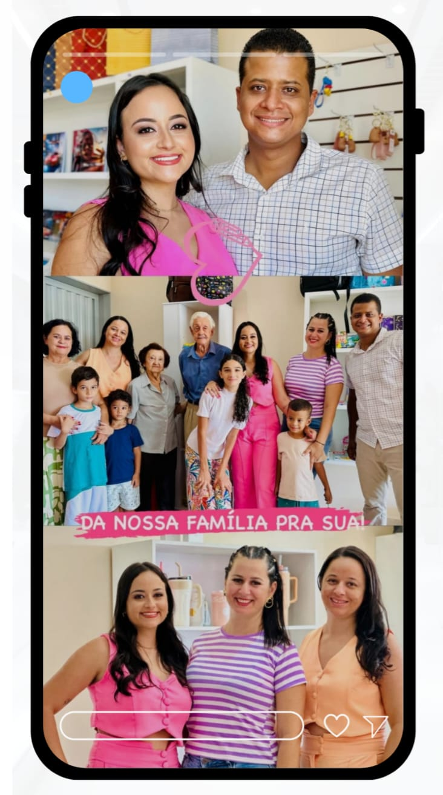

A Papelaria Eduarda Teles é uma empresa familiar que atua no segmento de materiais escolares, escritório e suprimentos para pequenos negócios.
Ramo: Varejo de papelaria
Porte: Microempresa
Sócios: 1 sócia
Público-alvo: Estudantes, profissionais e empresas
Fundada em: 08/12/2024
Foto da equipe / família

Endereço, redes sociais e canais da papelaria.
Agradecimentos especiais à Papelaria Eduarda Teles pela colaboração.